SporTrax – Track Your Tennis Game on Apple Watch GK
SporTrax is a simple and powerful Apple Watch app that lets you keep score during tennis matches — no phone needed! Stay focused and in control whether you're playing casually or competitively.
🎾 Core Features
- Track points, games, sets, and matches in real time
- Quickly undo the last point if needed
- Automatic serve indicator to keep you on track
- Designed exclusively for the Apple Watch — intuitive and lightweight
📱 App Interface
Navigate easily between sports and mini-games. Here’s a peek at the user-friendly UI:
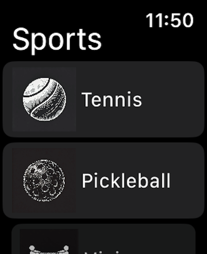 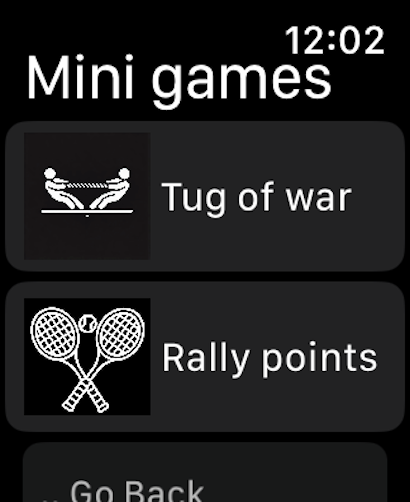🎾 Tennis Game Mode
Keep track of your tennis match score point by point.
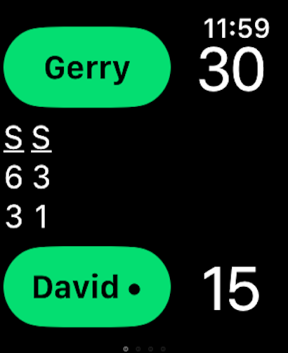🎾 Start a new set GK
When the current set is over, you have the option to start a new set.
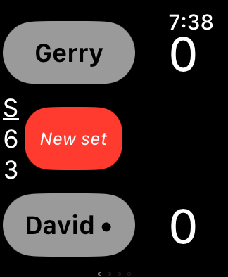🎾 Start a tie break
When both players won the same number of sets, you can start a super tie break.
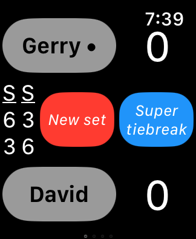🎾 Match win
Match win.
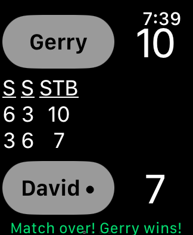🎾 Match quit
To quit the match, swipe left to the quit view and click on the quit button.
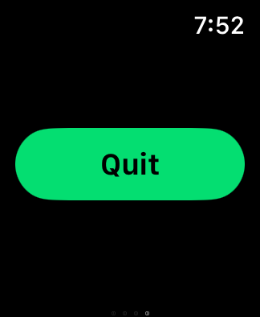↩️ Match Settings Feature
Set the player names in the match settings.
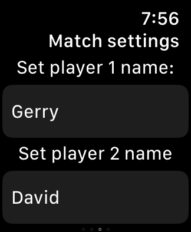↩️ Match Settings Feature
The serve indicator is the black dot beise the player name. You can turn it on or off.
Additionaly, you can indicate which player serves first.
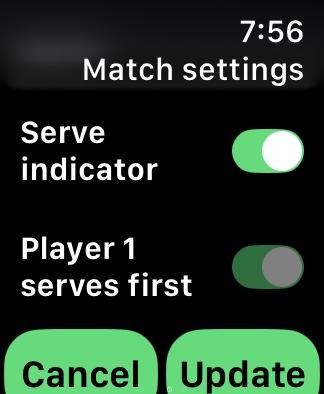📊 Match Analytics
Get a professional-level breakdown of your performance. SporTrax now tracks advanced statistics throughout your match to help you identify your strengths and weaknesses:
- Point Breakdown: Total points played and won, including win percentages.
- Break Point Efficiency: Track how many break points you created and how many you successfully converted.
- Service Stats: Monitor your service points won and your overall service win percentage.
- Receiving Stats: See how well you perform when returning, with detailed receiving points won data.

 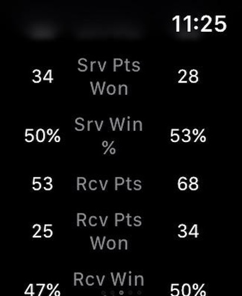
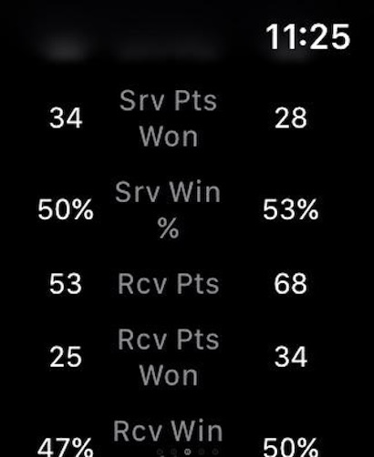
📱 iPhone Companion App
While the Apple Watch handles the heat of the match, the SporTrax iPhone app becomes your personal performance lab. Review every point, game, and set with a sleek, native interface that keeps your entire tennis history in your pocket.
📈 Performance Summary
Get a high-level view of your career stats. The Summary tab aggregates every match you’ve played to show your lifetime win percentages across key metrics:
- Match & Set Win Rates: See your total wins and losses at a glance.
- Skill Breakdown: Track your lifetime effectiveness in Break Points, Service Points, and Receiving Points.
- Visual Progress: Progress bars help you visualize how close you are to dominating each category.

Match History
The Activity log stores every match chronologically, showing you exactly who you played, when, and what the final set scores were.

Detailed Match Analytics
Dive deep into any specific match to analyze your performance in granular detail:
- Box Score: A complete set-by-set breakdown.
- Match Timing: View the exact start time, end time, and total duration of play.
- Deep Stats: Compare your win percentages, break point conversions, and service accuracy against your opponent.
🎾 Download the App
📧 Support
Need help or have feedback? Contact us at sportrax1201@gmail.com.
🔒 Privacy
SporTrax does not collect, store, or share any user data. View our Privacy Policy for full details.